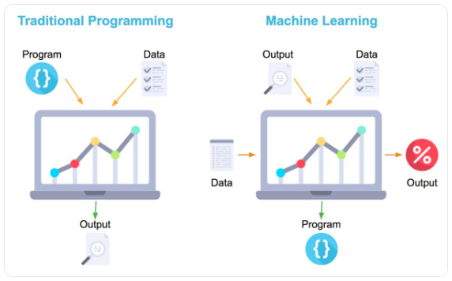
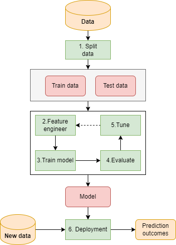
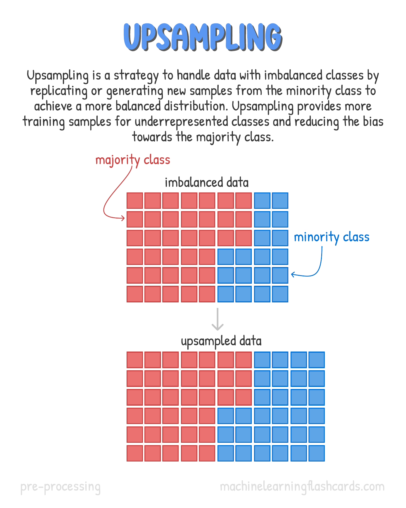
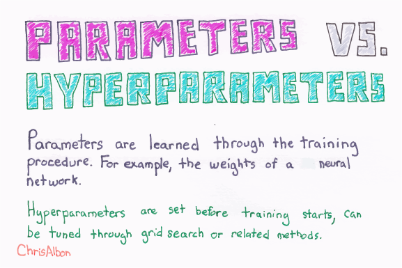
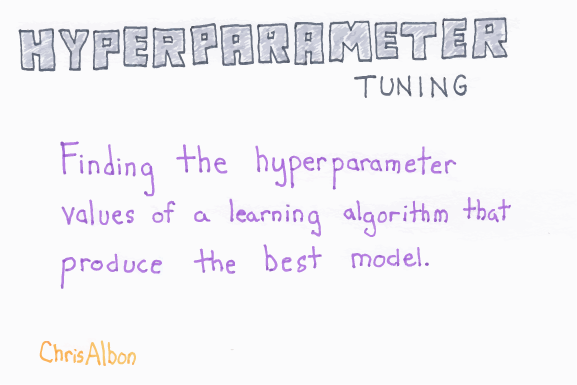
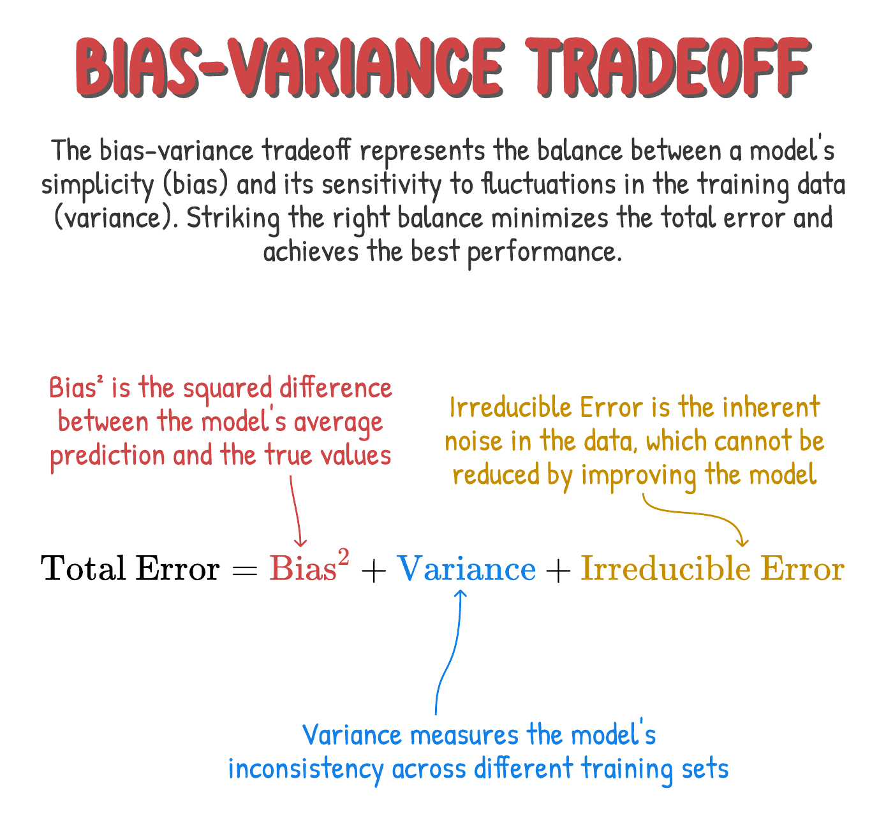
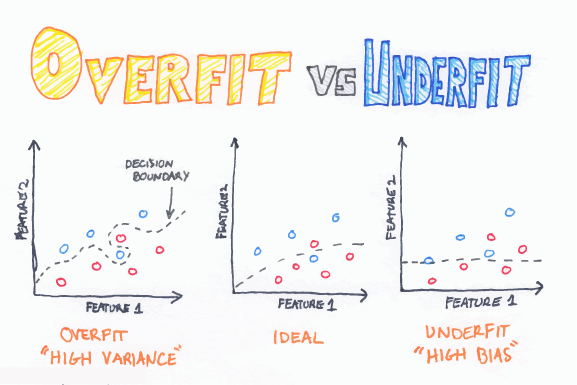
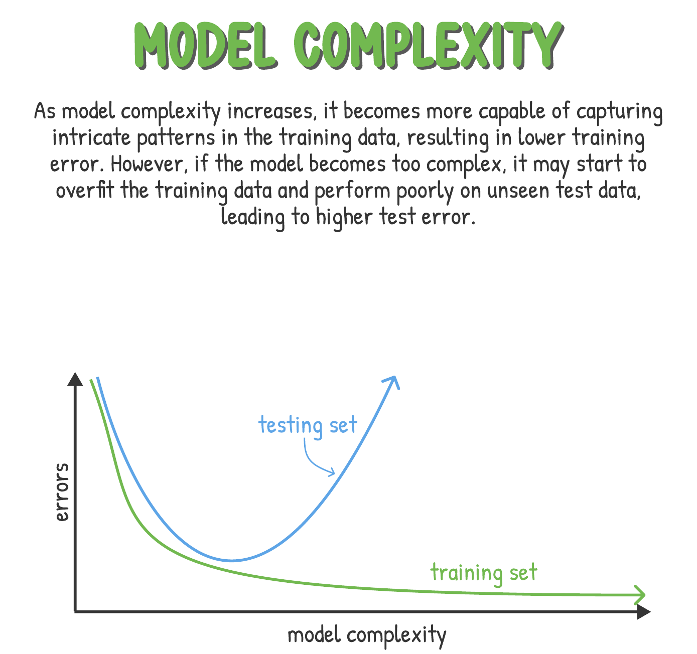

17 Giới thiệu về học máy
17.1 Giới thiệu
Học máy (machine learning) là lĩnh vực tập trung vào việc phát triển các thuật toán và mô hình giúp máy tính tự học từ dữ liệu và thực hiện dự đoán hoặc quyết định dựa trên dữ liệu đó. Mục tiêu chính của học máy là xây dựng các hệ thống có thể tự động học và cải thiện từ kinh nghiệm mà không cần lập trình tường minh.
Với việc lập trình thông thường, ta cần phải đưa ra các logic để máy tính đưa ra kết quả đầu ra - đây gọi là quá trình lập trình tường minh.
Với học máy, ta chỉ hướng dẫn máy tính học về cấu trúc dữ liệu thông qua đưa ra các input đầu vào và kết quả đầu ra mong muốn. Máy tính sẽ tự học và đưa kết quả đầu ra làm một mô hình (model). Với các dữ liệu đầu vào mới, máy tính sẽ dựa trên mô hình vừa học để trả ra kết quả dự báo đầu ra.

Trong chương này, chúng ta sẽ tìm hiểu những khái niệm và nguyên lý cơ bản nhất của học máy (machine learning). Các nguyên lý này sẽ giúp ta nắm vững để có thể phát triển nhanh chóng trong lĩnh vực dự báo. Khi đã nắm vững các nguyên lý này, việc xây dựng mô hình với các thuật toán khác nhau sẽ không còn quan trọng nữa bởi tất cả sẽ đều phải đi qua các nguyên lý giống nhau.
17.2 Các nhánh trong học máy
Học máy có thể được chia thành 2 nhóm lớn - học máy có giám sát và học máy không giám sát
Học máy có giám sát (Supervised learning) là kỹ thuật xây dựng mô hình tìm mối liên hệ giữa biến phụ thuộc với một hoặc nhiều biến độc lập. Biến cần dự báo được gọi là biến phụ thuộc (target), các biến đầu vào được gọi là biến độc lập (input, feature). Các đối tượng (instances) được sử dụng trong việc xây dựng mô hình còn được gọi là quan sát (observation). Ví dụ:
- Dự báo khách hàng vỡ nợ dựa vào các đặc trưng về nhân khẩu học và hành vi giao dịch của khách hàng.
- Dự báo giá bán nhà phụ thuộc vào các tham số của ngôi nhà.
Các thuật toán như cây quyết định, logistics, mô hình hồi quy tuyến tính đều thuộc loại này. Tuy nhiên, tùy thuộc vào đặc điểm của biến cần dự báo, ta lại có hai nhóm nhỏ sau:
- Bài toán phân loại (
classification): Khi biến phụ thuộc là các biến định dạng nhóm (category). Kết quả đầu ra của các mô hình dạng này là điểm xác suất xảy ra một sự kiện hoặc nhóm dự báo. Ví dụ:- Dự báo khách hàng tốt hay xấu, khách hàng mua hay không mua sản phẩm,…
- Dự báo phân khúc khách hàng
- Bài toán hồi quy (
regression): Khi biến phụ thuộc biến định dạng số liên tục. Ví dụ:- Dự báo giá trị của tổng các giao dịch một khách hàng có trong 1 tháng
- Dự báo/Ước lượng thu nhập của khách hàng hàng tháng
Học máy không giám sát (Unsupervised learning) là kỹ thuật tìm ra các mối qua hệ ẩn trong dữ liệu mà không có biến mục tiêu. Các bài toán loại này có thể chia làm 2 nhóm lớn như sau:
- Bài toán phân nhóm hoặc phân cụm (
clustering): Bài toán loại này giúp ta chia tập dữ liệu sẵn có thành nhiều nhóm khác nhau để sao cho đặc trưng của mỗi nhóm là gần nhau nhất. Ví dụ:- Phân nhóm khách hàng của một ngân hàng thành các nhóm khác nhau để mỗi nhóm có hành vi giao dịch & nhân khẩu học là tương đồng trong các nhóm nhiều nhất
- Bài toán giảm chiều, tìm thành phần chính : Bài toán này giúp ta giảm số lượng các biến có sẵn trong dữ liệu gốc nhưng vẫn đảm bảo thể hiện được cấu trúc của toàn bộ dữ liệu hoặc tìm ra các cấu trúc ẩn trong dữ liệu. Ví dụ:
- Phân tích các nhân tố ẩn (
latent variable) trong khi làm khảo sát 500 khách hàng - Phân tích quan hệ giao dịch của khách hàng khi mua các sản phẩm khác nhau trong siêu thị
- Phân tích các nhân tố ẩn (
17.3 Cách bước xây dựng mô hình
Sau khi đã xác định được vấn đề kinh doanh cần giải quyết, cơ bản ta có 6 bước lớn để xây dựng và đưa vào ứng dụng mô hình, bao gồm:
- Bước 1 - Thu thập dữ liệu & phân chia thành các nhóm train/test (
data - it) - Bước 2 - Xử lý dữ liệu - tạo thêm các biến mới, loại bỏ hoặc biến đổi dữ - u đầu** vào (**
feature engineer) - Bước 3 - Huấn luyện mô hình (
train) - Bước 4 - Đánh giá chất lượng mô hình (
evaluate) - Bước 5 - Tối ưu hóa & tinh chỉnh mô hình (
tuning) - Bước 6 - Đưa mô hình vào sử dụng thực tế (
deployment)

17.3.1 Thu thập dữ liệu & phân chia train test
Khi xây dựng mô hình, ta thường có hai tập dữ liệu
- Train: Tập dữ liệu được sử dụng khi xây dựng (huấn luyện) mô hình
- Test: Tập dữ liệu dùng để đánh giá chất lượng mô hình được xây trên tập train, cập nhật lại các hyper-parameters mô hình để đưa ra mô hình cuối cùng
Trong 1 số trường hợp - ta có thể xây dựng thêm tập dữ liệu validation dùng để đánh giá chất lượng mô hình cuối cùng
Trong thực tế, cách chia dữ liệu đầu vào thành 2 tập train & test là phổ biến nhất. Tỷ lệ train và test trong thực tế thường được chia thành 70-30, 80-20 hoặc 75-25. Khi chia tập dữ liệu phục vụ xây dựng mô hình, có hai cách chia chính.
- Phân chia quan sát ngẫu nhiên thông thường (
simple random sampling) - Phân chia quan sát sao cho phân phối của biến cần dự báo trên hai tập
trainvàtestgiống nhau (stratified sampling)
Khi xây dựng mô hình, ta có thể gặp trường hợp dữ liệu có tỷ lệ cần dự báo quá ít so với các nhóm còn lại (2% vs 98%) - ví dụ - dự báo khách hàng fraud. Hiện tượng này gọi là bất cân bằng giữa các nhóm (imbalanced data). Khi gặp phải trường hợp bất cân bằng giữa các nhóm, ta cần phải thực hiện kỹ thuật lấy mẫu để giảm tỷ lệ bất cân xứng giữa các nhóm. Có hai phương pháp phổ biến nhất như sau.
Down sampling: Loại bỏ các quan sát thuộc nhóm chiếm đa sốUp sampling: Lặp lại & lấy ngẫu nhiên thêm các quan sát của nhóm thiểu số


17.3.2 Feature Engineering
Đây là bước xử lý dữ liệu đầu vào trước khi xây dựng mô hình. Trong thực tế, dữ liệu sẽ không bao giờ đầy đủ mà sẽ phát sinh các vấn đề sau:
- Dữ liệu bị thiếu (
missing value) - Dữ liệu category có trên tập train nhưng không có trên tập test và ngược lại. Ví dụ - tại tập train, với biến
education_levelcó giá trị high school và bachelor nhưng tập test lại có thêmdoctorvàmaster - Dữ liệu bị sai hoặc có các quan sát bất thường (
outlier). Ví dụ, biếnmarital statusdo hệ thống để mặc định và nhân viên bán hàng không nhập vào CRM nên 99% có giá trị làdivorced - Dữ liệu có ý nghĩa lớn nhưng không dùng trực tiếp được mà phải biến đổi sang dạng khác. Ví dụ, địa chỉ khách hàng so với địa chỉ siêu thị - sẽ không dùng trực tiếp được mà cần phải tính toán khoảng cách và thành một biến đầu vào mới.
- Dữ liệu không phù hợp với thuật toán, cần phải biến đổi để có thể sử dụng hiệu quả. Ví dụ - mạng neural cần scale về giá trị trong khoảng 0-1 để thuật toán hoạt động tối ưu
Tất cả các bước xử lý, biến đổi với dữ liệu ở trên được gọi là feature engineer. Việc lưu trữ các biến đã được xử lý và biến đổi để xây dựng mô hình dễ dàng hơn gọi là xây dựng feature store
17.3.3 Huấn luyện mô hình
Mô hình là một mối quan hệ giữa dữ liệu đầu vào X và kết quả đầu ra Y cho trước. Mối quan hệ này được thể hiện như sau
\[h_{\theta} = \theta_0 + \theta_1 \times X\]
Trong đó:
- \(h_{\theta}\) được gọi là giả thuyết hay mô hình,
learner - \(\theta\) là tham số của mô hình - tham số này phụ thuộc & thảy đổi theo từng thuật toán khác nhau
- X được gọi là biến độc lập (
independent variables) hoặc biến dự báo (predictors),features,predictor variable,independent variable,attributes,input - Y được gọi là biến phụ thuộc (
dependent variables), biến mục tiêu (target variable),response,response variable,output
Với các bài toán khác nhau, phương trình trên sẽ được thay đổi để phù hợp với bài toán thực tế. Sự khác biệt giữa kết quả dự báo & thực tế gọi là sai số. Ví dụ
| ID | Dự báo | Thực tế | Sai số |
|---|---|---|---|
| 1 | 2 | 3 | 1 |
| 2 | 5 | 3 | -2 |
Khi xây dựng mô hình, thuật toán sẽ tính toán hàm mất mát (loss function) và sẽ điều chỉnh tối ưu hóa hàm này (tối thiểu hóa)
Khi xây dựng mô hình, tất cả các thuật toán của ML đều trải qua ba bước cơ bản theo sơ đồ sau.

- Bước 1: Xây dựng mô hình với tham số bất kỳ. Với mỗi mô hình, sẽ có các tham số khác nhau. Ví dụ, mô hình OLS, tham số là hệ số \(\beta\) trong mô hình \(y = \beta*X\).
- Bước 2: Đo lường sai số mô hình so với thực tế - tính toán hàm mất mát (
loss function). Hàm mất mát đơn giản nhất là \(\sum{\epsilon^2}\) - Bước 3: Tinh chỉnh lại tham số của mô hình để giảm thiểu sai số giữa mô hình và thực tế.
Thuật toán sẽ tiếp tục diễn ra cho đến khi sai số của mô hình nhỏ hơn 1 mức sai số định trước.
Huấn luyện mô hình là quá trình đưa ra các chỉ dẫn về thuật toán cũng như các siêu tham số (hyperparameter) cho trước để máy tính có thể đưa ra mô hình tối ưu nhất.
Hyperparameters: Mỗi mô hình có các tham số cho phép thay đổi độ phức tạp của mô hình. Hyperparameters là tổ hợp các tham số để xây dựng thuật toán. Tuning hyperparameters là cách thức tinh chỉnh độ phức tạp của các tham số trong mô hình. Một thuật toán được gọi là có hyperparameter nếu mỗi lần thay đổi, ta sẽ có các mô hình khác nhau. Hyperparameter phải được khai báo trước khi xây dựng mô hình
Parameter (tham số) là các tham số đầu vào của mô hình được máy học và tối ưu hóa qua quá trình training.

Ví dụ: Mô hình cây quyết định - hyperparameter là tổ hợp các tham số được cho trước khi xây dựng mô hình gồm:
- Số lần rẽ nhánh tối đa.
- Số quan sát tối thiểu tại mỗi lá
Nếu điều chỉnh các chỉ số này, mỗi lần xây dựng mô hình sẽ ra các kết quả khác nhau.
Khi xây Đây là hai loại hai trường phái được sử dụng khi xây dựng các mô hình thống kê.
- Parametric: Đưa ra mô hình biểu diễn mối quan hệ trước rồi sau đó ước lượng mô hình đưa ra. VD: OLS, Logistic Regression
- Nonparametric: Không đưa ra mô hình, chỉ đưa ra phương pháp và để thuật toán tự động tìm kết quả. VD: Association rule, decision tree…
17.3.4 Đánh giá mô hình
Với mỗi bài toán khác nhau, có các chỉ số khác nhau để đánh giá hiệu quả của mô hình.
17.3.4.1 Mô hình hồi quy
Với nhóm bài toán hồi quy, các chỉ số sau thường được dùng để đánh giá chất lượng mô hình.
- MSE: Giá trị trung bình của bình phương sai số (
Mean squared error) \(MSE = \frac{1}{n} \sum^n_{i=1}(y_i - \hat y_i)^2\). Mục tiêu: Tối thiểu hóa - RMSE: \(RMSE = \sqrt{\frac{1}{n} \sum^n_{i=1}(y_i - \hat y_i)^2}\). Mục tiêu: Tối thiểu hóa
- MAE: Mean absolute error. \(MAE = \frac{1}{n} \sum^n_{i=1}(\vert y_i - \hat y_i \vert)\). Mục tiêu: Tối thiểu hóa
- RMSLE:
Root Mean Squared Log Error\[RMSLE = \sqrt{\frac{1}{n} \sum^n_{i=1}(log(y_i + 1) - log(\hat y_i + 1))^2}\]. VớiMSE/RMSE, 1 quan sát có sai số lớn sẽ ảnh hưởng rất lớn đến chất lượng mô hình. Khi sử dụngRMSLE, sai số của mỗi quan sát sẽ có trọng số tương đồng hơn và phù hợp khi xây dựng mô hình có các giá trị biến thiên rộng. Mục tiêu: Tối thiểu hóa - \(R^2\): Chỉ số R-bình phương, cho biết tỷ lệ biến thiên của biến dự báo được thể hiện qua mô hình. Mục tiêu: Tối đa hóa
Trong các chỉ số trên, \(R^2\) và \(MSE\) là quan trọng nhất. Để nắm vững đánh giá chất lượng mô hình hồi quy, xem kỹ việc đánh giá và diễn giải chỉ số của mô hình OLS.
17.3.4.2 Mô hình phân loại
Đối với bài toán phân loại, các chỉ số sau là quan trọng nhát:
- Misclassification: Tỷ lệ phân loại sai. Ví dụ: Có 2 nhóm
Goodvs.Bad. Tỷ lệ sai số mỗi nhóm là 10% và 20%. Tỷ lệ phân loại sai trên toàn bộ tập hợp là 30%. Mục tiêu: Tối thiểu hóa - Mean per class error: Tỷ lệ sai số trung bình trong mỗi nhóm. Trong ví dụ trên, tỷ lệ sai số trung bình mỗi nhóm là 15%. Mục tiêu: Tối thiểu hóa
- Mean Square ErrorE: Bình phương sai số từ xác suất dự báo đến 1 với class
positive. Ví dụ, vớipositiveclass, điểm xác suất từ mô hình là 0.95, \(MSE = (1-0.95)^2\). Mục tiêu: Tối thiểu hóa - AUC - Area Under Curve: Được sử dụng để đo lường việc phân loại giữa 2 class trong mô hình phân loại 2 lớp (
binary classification). Chỉ số này có giá trị trong khoảng 0-1. Mục tiêu: Tối đa hóa - Recall (Sensitivity): Trong 100 trường hợp thực tế là positive, mô hình dự báo được bao nhiêu trường hợp. Mục tiêu: Tối đa hóa
- Precision: Trong 100 trường hợp dự báo là positive, bao nhiều trường hợp thực sự là positive.
Với các chỉ số trên, cần nắm vững chỉ số AUC, Recall và Precision. Để nắm vững đánh giá chất lượng mô hình phân loại, xem kỹ phần mô hình logistic.
17.3.5 Tuning
Tuning là quá trình tìm ra giá trị của các bộ siêu tham số phù hợp nhất với dữ liệu. Mỗi bộ parameter khác nhau sẽ cho ra một mô hình với các chỉ số về hiệu quả khác nhau. Để tìm kiếm tổ hợp tham số tốt nhất cho 1 mô hình, thường có 2 cách:
Grid search: Tổ hợp tất cả các trường hợp có thể có của tham sốRandom search: Tổ hợp ngẫu nhiên các trường hợp khả dĩ
Với một mô hình chỉ có bộ 3 siêu tham số, mỗi siêu tham số ta muốn thử 10 giá trị. Nếu dùng grid search, ta sẽ phải xây dựng \(10^3 = 1000\) mô hình. Cách dùng random search sẽ giảm thiểu được một phần số lượng mô hình cần tính toán. Khi tuning, ta có thể sử dụng kỹ thuật early stopping để dừng việc tuning khi sai số mô hình đạt đến mức độ sai số cho phép (được xác định trước).

Lưu ý: Không phải thuật toán nào cũng có hyperparameters (ví dụ, OLS - mô hình hồi quy không có hyperparameters) nhưng phần lớn các thuật toán đều có tối thiểu 1 tham số.
17.3.6 Deployment
Deployment là quá trình đưa mô hình vào ứng dụng thực tế, có 3 cách thông thường đưa mô hình vào dự bao thực tế.
- Batch Scoring: Đưa mô hình dự báo theo
batch, thường áp dụng với nhóm dữ liệu ít thay đổi liên tục & chỉ cần dự báo định kỳ hàng tuần hoặc hàng tháng. Ví dụ - dự báo nhu cầu khách hàng mua sản phẩm tiếp theo của ngân hàng hàng tháng & lưu trữ tại CRM. Phương thức này còn được gọi làoffline prediction - Real time API: Đưa mô hình dự báo theo dạng API, và có thể trả kết quả theo thời gian thực - thường áp dụng với quy mô vừa, và nhu cầu thay đổi thường xuyên. Ví dụ - dự báo & trả ra kết quả các item khách hàng có thể sẽ quan tâm trên app thương mại điện tử dựa trên hành vi sử dụng app/website. Phương thức này còn gọi là
online prediction - Nhúng mô hình vào các thiết bị: Đưa cả mô hình dự báo vào trong 1 thiết bị - thường dùng trong các thiết bị thông minh. Mô hình dạng này sẽ cần chuyển đổi thành ngôn ngữ khác (như Java) trước khi nhúng vào thiết bị. Ví dụ - mô hình nhận diện chuyển động và cảnh báo trong camera giám sát gia đình.
Hai loại deployment được dùng nhiều nhất là batch scoring & real time API.

Với việc phát triển về cơ sở hạ tầng trên Cloud, việc deploy mô hình ngày càng trở nên dễ dàng hơn nhưng vẫn là mảng phức tạp khi triển khai quy mô lớn, đặc biệt khi quản lý về vấn đề chi phí, độ trễ của kết quả dự báo của mô hình
17.4 Các nguyên lý trong dự báo
17.4.1 Reducible & irreducible error
Trong thực tế, mối quan hệ giữa X & Y được biểu diễn qua hàm sau: \[Y = f(X) + \epsilon \] Khi phân tích dữ liệu, ta tìm hàm \(\hat(Y)=\hat{f}(X)\) gần nhất với \(f(X)\). Sai số giữa thực tế và mô hình sẽ là:
\[ \begin{align} E(Y-\hat{Y})^2 & = E[f(X) - \hat{f}(X) - \epsilon]^2\\ & =E[(f(x) - \hat{f}(X))^2 - 2*\epsilon*(f(x) - \hat{f}(X)) + \epsilon^2)]\\ & =E[(f(x) - \hat{f}(X))^2] - \underbrace{2*E(\epsilon)}_{= 0}*E(f(x) - \hat{f}(X))) + E(\epsilon^2) \\ & =E[(f(x) - \hat{f}(X))^2] + [E(\epsilon^2) - \underbrace{E(\epsilon)^2}_{=0}]\\ & = E\underbrace{[f(X) - \hat{f}(X)]^2}_{\text{reducible}} + \underbrace{Var(\epsilon)}_{\text{irreducible}} \end{align}\]
Lưu ý: \(Var(\epsilon) = E(\epsilon^2) - E(\epsilon)^2\)
Khi xây dựng mô hình, ta chỉ có thể giảm bớt phần reducible error mà không thể giảm được phần variance của sai số. Do đó, mô hình sẽ không thể đạt được độ chính xác 100% mà luôn tồn tại một mức sai số nhất định.
17.4.2 Đánh đổi giữa bias & variance
Mở rộng cấu phần của sai số có thể giảm thiểu, ta có thể phân tách tiếp như sau:
\[ \begin{align} \text{Error} & = E(y - \hat{f}(x))^2 \\ & = \text{Var}(\hat{f}(x)) + [\text{Bias}(\hat{f}(x))]^2 + \text{Var}(\epsilon) \end{align} \]
Trong đó:
Biaslà sai số giữa quan sát thực tế và kết quả dự báo kỳ vọng (kết quả dự báo trung bình) của mô hình.Variance: là độ biến động của kết quả dự báo từ mô hình đã xây dựng vớicác tập dữ liệu khác nhau.
Những mô hình đơn giản là mô hình có bias cao nhưng variance thấp. Trong khi đó, các mô hình có độ phức tạp cao hơn lại có bias thấp và variance cao. Bias đại diện cho độ chính xác của mô hình trong khi variance đại diện cho độ khái quát hóa của mô hình. Mô hình có độ khái quát cao (generalization) sẽ có bias cao, variance thấp và ngược lại
Variance của mô hình tăng thì Bias sẽ giảm và ngược lại.

Ví dụ:
- Model 1 sử dụng
medianlà mô hình dự báo cóbiascao (sai số giữa thực tế và kỳ vọng) vàvariancethấp (tất cả các quan sát đều có chung 1 giá trị dự báo) - Mô hình 2 sử dụng
sin(x)là mô hình dự báo cóbiasthấp (mô hình sát với thực tế) nhưngvariancecao (mỗi quan sát sẽ có 1 giá trị dự báo khác nhau)
Mô hình quá đơn giản, khiến bias cao còn được gọi là hiện tượng undefit. Mô hình quá phức tạp, khiến bias rất thấp nhưng dự báo không tốt trên tập test, gọi là hiện tượng overfiting.
Khi xây dựng mô hình dự báo, có thể xảy ra 3 trường hợp:
- Underfiting: Hiện tượng mô hình quá đơn giản, tính khái quát hóa cao nhưng dự báo không tốt, dẫn đến sai số cả ở tập train & test đều cao. Mô hình underfitting thường đi kèm với bias cao
- Overfitting: Hiện tượng xảy ra khi mô hình hoạt động tốt trên tập train nhưng dự báo rất kém trên tập test. Mô hình loại này sẽ khiến sai số trên các tập dữ liệu khác nhau thường rất khác nhau. Do đó, overfitting còn đi kèm với
variancelớn - Mô hình được xây dựng tốt: Là loại mô hình hoạt động tốt trên cả tập train & test.
3 trường hợp xây dựng mô hình được thể hiện ở hình dưới đây.

Để giải quyết vấn đề overfiting, ta có thể làm như sau:
- Chủ động giảm biến bằng cách chọn biến thủ công hoặc áp dụng các kỹ thuật lựa chọn mô hình
- Regularization: Kỹ thuật cho phép giữ nguyên số lượng biến đầu vào nhưng giảm giá trị của các tham số \(\theta\) trong mô hình
Regularization: Regularization cho phép tính toán giá trị của các tham số \(\theta\) trong mô hình, sao cho các giá trị của \(\theta\) càng nhỏ càng tốt. Hàm tối ưu hóa được thay đổi lại như sau.
\[J(\theta_0. \theta_1) = \underset{\theta_0, \theta_1}{\text{minimize}}\frac{1}{2m}\sum_{i=1}^m(h_\theta(x^{(i)}) - y^{(i)})^2 + \lambda\sum_{i=1}^n\theta_j^2\]
Trong đó, \(\lambda\sum_{i=1}^n\theta_j^2\) được gọi là tham số regularization. Hệ số, \(\lambda\) sẽ quyết định vị độ mạnh của regularization. Nếu \(\lambda\) càng lớn, yếu tố làm giảm thiểu overfitting càng mạnh. Tuy nhiên, nếu \(\lambda\) quá lớn (ví dụ, \(10^{10}\)) sẽ khiến cho toàn bộ các tham số \(\theta\) trở về 0, và mô hình sẽ thay đổi từ overfitting sang underfitting.
Phương pháp tính toán sai số trong bài toán phân loại - The Classification Setting
\[\text{Training error rate} = \frac{1}{n}\sum_{i=1}^n I(y_i \neq \hat {y_i})\]
Trong đó \(I(y_i \neq \hat{y_i}\) là “indicator variable”, có giá trị bằng 1 nếu \(y_i \neq \hat{y_i}\), có giá trị bằng 0 nếu \(y_i= \hat{y_i}\)
17.4.3 Khả năng giải thích và khả năng dự báo
Khi xây dựng mô hình, có hai khía cạnh cần phải xử lý:
- Khả năng giải thích
- Khả năng dự báo
Khả năng giải thích hay khả năng rút ra kết luận từ mô hình (inference): Nhấn mạnh đến khả năng diễn đạt ý nghĩa các biến trong mô hình. Các câu hỏi thường dùng là:
- Biến đầu vào nào có quan hệ chặt chẽ với biến cần dự báo?
- Mối quan hệ giữa biến độc lập và biến dự báo là gì?
- Mối quan hệ này có thể biểu diễn một cách đơn giản dạng mô hình tuyến tính hay phải mô tả dưới dạng phức tạp hơn?
Ví dụ về khả năng giải thích của mô hình:
- Khách hàng trả nợ trễ hạn 3 lần sẽ làm tăng khả năng trốn nợ lên 20%
- Giá giảm 10% sẽ khiên doanh thu tăng thêm khoảng 6%.
Các thuật toán như OLS, apriori, logistics thuộc nhóm này.
Khả năng dự báo của mô hình: Ưu tiên hơn đến tính chính xác của mô hình dự báo, không quan tâm đến việc mô tả quan hệ giữa các biến. Ví dụ: randomforest, neural network, xgboost
:::{.callout-note} ## Đánh đổi giữa độ chính xác và khả năng giải thích
Khi xây dựng mô hình, ta buộc phải dánh đổi giữa độ chính xác của mô hình vs. khả năng diễn giải mô hình và không tồn tại một mô hình tốt nhất cho mọi trường hợp. Do đó, ta cần phải lựa chọn mô hình theo từng đối tượng.
17.4.4 Độ phức tạp mô hinh vs sai số trên tập train
Khi mô hình có độ phức tạp càng cao thì sai số của tập train sẽ ngày càng giảm trong khi sai số của tập test sẽ có dạng chữ U*

Khi xây dựng mô hình, để đánh giá chất lượng, ta sẽ đo lường sai số trên tập train và tập test. Sai số của mô hình được tính như sau (với trường hợp regression)
\[MSE = \frac{1}{n} \sum^n_{i=1}(y_i - \hat{f}(x_i))^2\]
Khi đánh giá chất lượng mô hình, ta cần đánh giá trên cả tập train và tập test. Thông thường, mô hình sẽ được xây trên tập train và được đánh giá trên tập test. Các tham số trên tập train sẽ được thay đổi để sai số mô hình được tối ưu. Số lượng tham số cần tối ưu càng nhiều, mô hình càng phức tạp.
Ví dụ: Ta cần dự báo \(income\), ta có hai mô hình sau.
| STT | |
|---|---|
| 1 | \(income = \beta_0 + \beta_1*age\) |
| 2 | \(income = \beta_0 + \beta_1*age + \beta_2*experience\) |
Trong hai mô hình trên, mô hình 2 được gọi là phức tạp hơn mô hình 1 (compexity level).
Lưu ý:
- Nguyên lý chữ U cho ta thấy, việc tăng thêm biến vào mô hình (số lượng biến) không phải lúc nào cũng làm tăng chất lượng mô hình
- Khi xây dựng mô hình, cần phải tìm được điểm cân bằng giữa độ phức tạp mô hình và độ chính xác. Điểm này chính là điểm thấp nhất trên đường chữ U của sai số trên tập test
17.5 Nhược điểm của máy học
Mặc dù máy học (machine learning) có thể giải quyết được rất nhiều vấn đề khác nhau trong cuộc sống. Tuy nhiên, ta không nên coi machine learning là chìa khóa vạn năng có thể giải quyết mọi vấn đề. Ngược lại, machine learning gặp nhiều hạn chế như sau.
- Không áp dụng được với tập dữ liệu hoàn toàn mới: Do các thuật toán của máy học được xây dựng dựa trên dữ liệu của quá khứ, các thuật toán này sẽ không dự báo được chính xác với tập dữ liệu hoàn toàn mới. Ví dụ: Mô hình dự báo khách hàng churn tại Mỹ sẽ không thể áp dụng được tại Việt Nam và ngược lại. Chính vì lý do này, trong các ứng dụng của học máy, các bài toán nhận diện hình ảnh, âm thanh lại là nhóm được tái sử dụng nhiều nhất do dữ liệu hình ảnh, âm thanh được chuẩn hóa và khá tương đồng với các thị trường khác nhau.
- Khó giải thích: Phần lớn các thuật toán (vi trừ
linear model) đều thực hiện nhiều phép biến đổi toán học phức tạp và là tổ hợp của nhiều mô hình con (bagging, boosting). Vì vậy, kết quả dự báo của từng quan sát rất khó giải thích và gây ra nhiều khó khăn khi thuyết phục các đơn vị kinh doanh chấp nhận sử dụng kết quả từ mô hình. Để khắc phục nhược điểm này, hiện tạimachine learningđang phát triển ngànhhọc máy có giải thích, giúp tập trung giải thích cảglobal predictionvàlocal prediction. - Đòi hỏi chất lượng và khối lượng dữ liệu tốt: Các mô hình ML chỉ có thể giải quyết tốt khi chất lượng cũng như khối lượng dữ liệu (số quan sát, số biến) đầu vào đạt ở mức độ nhất đinh. Trong nhiều trường hợp, ta không thể áp dụng các bài toán
machine learningmà phải thay thế bằng các kỹ thuật phân tích khám phá dữ liệu. Các phân khúc và lĩnh vực đòi hỏi nhiều sự can thiệp của con người như khách hàng lớn, khách hàng doanh nghiệp - sẽ có rất nhiều khó khăn và trở ngại trong việc xây dựng mô hình cũng như ứng dụng.
17.6 Tài liệu tham khảo
- Introduction to Statistical Learning
- Hands on Machine Learning with R
- Practical data science with R